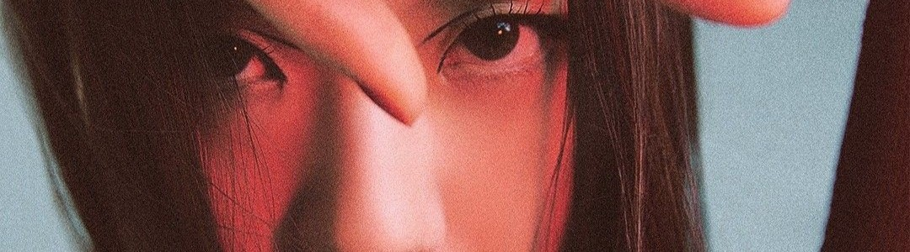

Jisoo
Nombre completo: 김지수 / Kim Ji Soo
Profesión: Cantante, Actriz, Modelo, Bailarina, Compositora y MC
Fecha de nacimiento: 03-Enero-1995 (28 Años)
Lugar de nacimiento: Seúl, Corea Del Sur.
Estatura: 162 cm
Peso: 45 kg
Tipo de sangre: A
Signo zodiacal: Capricornio
Signo zodiacal chino: Perro
Familia: Padres, hermano mayor y hermana mayor
Curiosidades
- Posición: Vocalista y bailarina
- Tipo de voz: Mezzosoprano
- Período de entrenamiento: 5 años.
- Idiomas: Coreano (lengua materna), Japonés (medio) e Inglés (medio).
- Mascotas: Un perro llamado Kim Dalgom.
- Color favorito: Morado y azul.
- Modelo a seguir: G-Dragon.
- Hobbies: Leer, jugar videojuegos, tomar fotografías, escribir y dibujar.
- Instrumentos: Piano y tambor.
- Fue modelo de marcas antes de su debut.
- Estuvo en la banda de percusión tradicional en la escuela media tocando el tambor.
- Desde sus días de trainee, cada vez que practicaba se lesionaba los tobillos y tenía que ir al hospital.
- Es embajadora de Dior.
- Apareció por segunda vez (primera vez #78) en la lista de TC Candler "The 100 most beautiful faces of 2020" quedando en el puesto #50.
- En 2022 fue nombrada embajadora global de la marca Cartier.
- A principios del 2023 Jisoo se abrió un canal de Youtube llamado "행복지수 103%"
- En marzo Jisoo debuta como solista, siendo la última integrante en hacerlo.